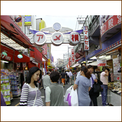

久しぶりに上野のアメ横へ行ってきました。アメはアメリカのアメじゃなくて、飴屋のアメね。

ワタル
1980年代よりフリーライターとしてさまざまなジャンルの人物をリポート＆プロモーション。現在は久保田利伸の仕事を中心に、オフの日はラーメン店のおやじとして厨房に立つことを人生の生きがいとしている。
久しぶりに上野のアメ横へ行ってきました。アメはアメリカのアメじゃなくて、飴屋のアメね。
上野「珍々亭」のわんたん麺。600円で昭和の味が堪能できるぞ!
世界一のとんかつ屋「ぽん多」。見よ、この門構え! 勇気とお金を出して、一度は食べてみて!
上野はマツタケが激安! 3万円のマツタケを、なんと2500円でＧＥＴ!
そのマツタケを茂本ヒデキチ画伯にプレゼント。値段を知らないから、この喜びよ〜(笑)!
滋賀のミッチーちゃんから送られた山形のラーメン。美味しく頂きました！
わっはっはっ! 「しんぼる」松っちゃん人形。賛否両論の映画だけど、オレはラストで泣いた!
ラーメンの仕込みを終え、日本の正しい朝食。オレ、エボダイの干物が超大好きなの!
臨機を探せ! ショーテンガイとの付き合いは大切だけど、かなりメンドーなのだ。
ちょっと分かりにくいけど、渋谷Мのサンマの刺身。初秋サイコーの美味!
で、その腹とワタは塩焼きにしてくれる。これが有名な「マーサンミーサシ、ラーハーキーヤ」。
渋谷Мのヨッパライ軍団。さすがのワタル自身も歯が立たないのだ。
蕎麦をたぐりに深大寺へ。申し訳ないが、３軒とも蕎麦の香りがなかった。残念〜!
深大寺の新名所「鬼太郎茶屋」。作者の水木しげる氏と調布に縁があり、この茶屋が出来たらしい。

秋のマイ・ガーデンに名も知らぬ小輪。真夏のヒマワリとは違ったオモムキに目をこらす。
初公開・悲しみの英国写真! 嗚呼、果てしなく切ないスコットランドの山河。
ネス湖の湖畔に残るアーカート城。この城からネッシーが何度も目撃されている。
悲しみのネス・リバー。このほとりで離婚を告げられた。告げた人が左に立っている。
大英博物館にあるロゼッタ・ストーン。エジプトのヒエログリフを解読する手かがリとなった。
大英博物館はとてもオープン。学生達が展示物をスケッチしたりオシャベリしたり。
深大寺の鬼太郎茶屋で見つけた鬼太郎手ぬぐい。なかなかキュートなのだ。
＜応募方法＞
官製ハガキにて下記の宛先までお送りください。
〒106-8626 東京都港区西麻布1-14-2 疋田ビル302号
（株）ファンキー・ジャム「月刊ワタル画報10月号プレゼント係」
（締め切り／10月末日消印有効）